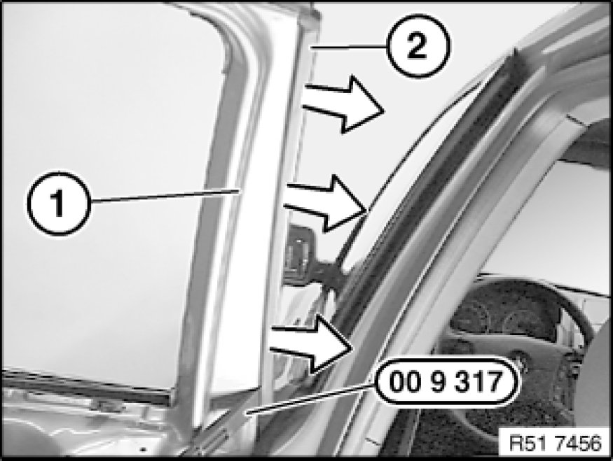
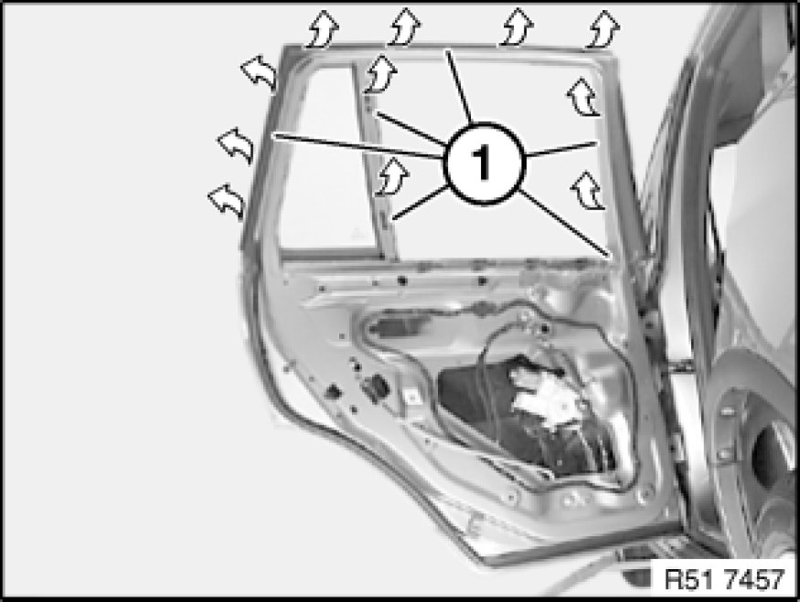
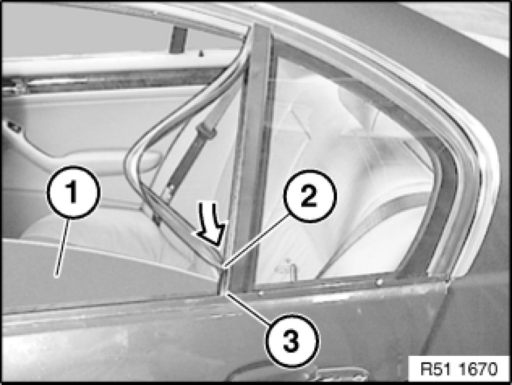

51 34 211 Replacing Rubber Guide For Rear Left or Right Door Window
51 34 211 - Replacing rubber guide for rear left or right door window

Special tools required:
- 00 9 317 00 9 317 Trim Panel Wedge

Necessary preliminary tasks:
- Remove cover on inside door window frame 51 34 160 Removing and Installing/Replacing Housing Cover on Inner Left or Right Door Window Frame
Note:
Rubber guide must be replaced after every complete removal.

Lever out rubber guide (1) on door window frame at front (2) with special tool 00 9 317 00 9 317 Trim Panel Wedge.

Feed out rubber guide (1) towards top.

Installation:
Close door window glass (1) a little.
Push rubber guide (2) onto door window glass (1) and into window guide (3).
Moisten rubber guide (2) with water.